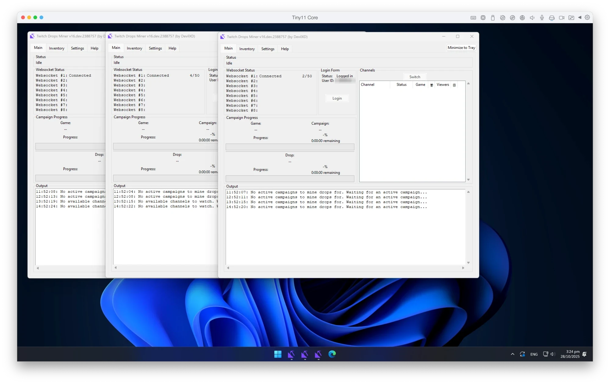
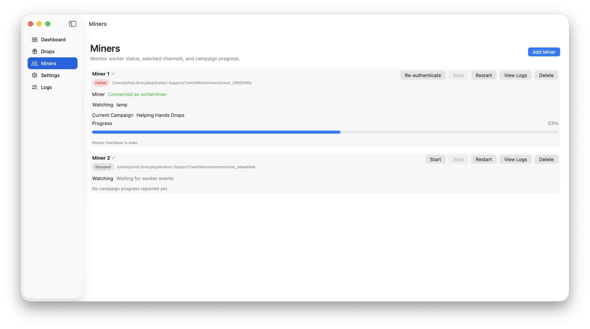
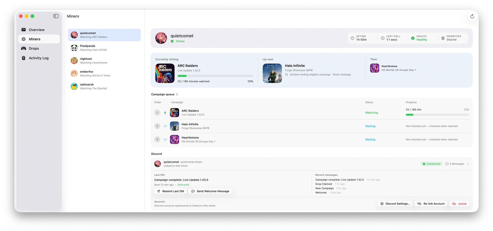

Background
The origins of SwiftMiner
It started as a favour to a few friends — three copies of TwitchDropsMiner running in a Windows VM on my Mac. Here's how that ended up as a native app.
My friends and I wanted Twitch Drops collected on our accounts, and I was the one with a machine that could sit there doing it. So I ran a copy of TwitchDropsMiner per account inside a stripped-down Windows 11 virtual machine on my Mac.
It worked, in the sense that it usually ran. It also spent a lot of memory and CPU doing it, and when one instance fell over it tended to stay fallen over until I next looked — which meant someone was quietly missing drops while everyone else kept collecting.

So I wasn't trying to build a new Twitch Drops miner. I wanted one Mac app that could look after all of our accounts at once, with no virtual machine in the middle. The first idea was the obvious one: keep TDM, run a copy per account, and drive them all from a single native app.
The first prototype
That project was called TwitchMiner-Server. I started it late on 15 March 2026. It was a Mac dashboard that launched and managed a separate background miner for each Twitch account.
Each of those background miners was an unmodified copy of TDM — TwitchDropsMiner, by DevilXD — the same program I had been running in the VM. TwitchMiner wasn't TDM, and it wasn't a Mac port of TDM's interface. It was a control panel sitting on top of several copies of it.
The dashboard could start and stop each miner, check whether it was still alive, and collect enough information to show progress. A small translator layer passed updates between the two sides.

It already had the rough shape of SwiftMiner: a sidebar, a Drops view, separate accounts, shared settings, an activity log, start and stop controls, progress per miner. It worked. It also made it obvious how much work it would take to keep the dashboard and all of those separate processes in step.
Why I scrapped it
The design was deliberately cheap: duplicate the miner, give every copy its own folder, gather the results in the dashboard. The Mac app had to launch each copy, keep the accounts apart, read progress updates, and notice when one stopped responding.
That's a reasonable way to test an idea and a poor way to ship one. Every extra friend meant another background process and another set of files. Installing, updating and debugging it would only get worse as the group grew.
- The prototype
- One dashboard, several separate miners. Each account ran its own copy of TDM in the background, and the Mac app collected their updates.
- The rewrite
- One app. SwiftMiner talks to Twitch itself, using frameworks already in macOS, and keeps account details in the Keychain.
Starting again
On 17 March, less than two days in, I started a fresh project called SwiftTwitchMiner. The background miners went. Signing in, finding campaigns, picking streams, tracking progress and claiming rewards were all rewritten as part of the Mac app.
TDM was still the best reference I had for how Twitch Drops actually behave, and I used what I'd learned from it while writing SwiftMiner in Swift. But SwiftMiner was written from scratch, not converted: it contains none of TDM's Python code and doesn't run TDM in the background.
I didn't switch because TDM had failed — it hadn't. I switched because I wanted a different thing: one Mac app, several accounts, an installer you double-click, and a single interface.
The name
It kept the working name SwiftTwitchMiner until 20 March, when I renamed it to SwiftMiner. The first 1.0 release went out that evening.
Both halves of the name are literal. Swift is the language it's written in, and miner is the word TDM and everything around it already used for a Twitch Drops miner. Neither half is a claim about speed.
By then it wasn't a control panel for other miners any more. The ideas from the screenshot survived — accounts, campaigns, progress, logs — but everything behind the interface was new.
What carried over
The code went. A few decisions didn't:
- Accounts stay independent. One person's account breaking shouldn't stop everyone else's, and I should still be able to see the whole group at a glance.
- The app says what it's doing. Status, activity, progress and recovery belong in the interface, not in a log file somewhere.
- It should behave like a Mac app. One signed bundle, Keychain storage, automatic updates, nothing extra to install.

Plenty has been added since that week — better scheduling and recovery, a web dashboard, Discord integration through SwiftBot, automatic updates, and a lot of reliability work. The job hasn't changed, though. It still sits on one Mac collecting drops for me and the same friends — five accounts now rather than the three in that screenshot, running 24/7, on a machine that no longer needs a Windows VM to do it.
Credit
SwiftMiner exists because TDM showed what a reliable Twitch Drops miner looks like. DevilXD's project ran the miners behind the first prototype, helped me work out Twitch's behaviour during the rewrite, and is still the first thing I check when that behaviour changes.
SwiftMiner is a separate app now, but that doesn't change where it started. TwitchDropsMiner deserves the credit for that.